✦ Indice ✦
ᛟIL'Abisso ti chiamaIntroduzione ᚠIILa DiscesaPrimi passi e stanza ᚦIIIComandiTavola dei tasti ᚨIVLe Nove ClassiEroi e abilità ᛁVLe Creature dell'AbissoBestiario ᛗVII Sei BossSignori delle tane ᛚVIIL'Arte del CombattimentoMira, mana, telegrafi ᛏVIIIEsplorazioneNebbia, torce, forzieri ᛞIXEquipaggiamentoRarità e statistiche ᛒXPotenziamentiBenedizioni temporanee ᛊXIIl MercanteSpendi prima che sia tardi ᛉXIILa Morte è per SemprePermadeath e rianimazione ᚲXIIICompagnia nell'OmbraMultiplayer, chat, vocale ᚹXIVSegreti e ConsigliDella sopravvivenzaL'Abisso ti chiama
Sotto il villaggio di pietra esiste un vuoto senza fondo. Le cronache lo chiamano l'Abisso: piani di labirinti scolpiti nella roccia, pieni di oro, armi perdute e creature che non hanno mai visto la luce del sole. Ogni discesa è una spedizione. Ogni spedizione è l'ultima — perché chi muore laggiù non torna.
Questo manuale è la tua unica mappa. Studialo, memorizza la tavola dei tasti e le mosse dei boss: l'Abisso non perdona l'improvvisazione.
- Genere: roguelike multiplayer in tempo reale, condiviso, senza server.
- Come funziona: tutto il gioco vive in un unico file index.html. Apri il link, scegli un nome ed entra: la stanza che scegli è un mondo persistente.
- Persistenza: finché almeno un giocatore resta collegato, lo stato del mondo — mostri, forzieri aperti, oggetti, profondità — resta vivo. Chi arriva dopo si sincronizza con la situazione corrente.
- Zona sicura: l'ingresso, tinta d'azzurro, è un santuario. I mostri non possono entrarci. Lì trovi il mercante.
La Discesa
Al primo avvio vedi la schermata della discesa. I campi sono pochi e contano tutti:
- Nome — il nome che i compagni leggeranno sopra la tua testa (max 18 caratteri).
- Stanza — il codice del mondo condiviso. Chiunque usi lo stesso codice entra nello stesso abisso. Premi il dado 🎲 per un codice casuale.
- Giocatori max — usato solo se sei tu a creare la stanza (se è vuota); tetto consigliato: 8 avventurieri. Oltre il limite, chi entra dopo può unirsi come osservatore.
Prima del login scegli il tuo eroe tra le 9 classi (capitolo IV). Poi premi «Entra nell'Abisso» e vieni lanciato subito nel mondo: niente schermate di attesa, si parte.
Se la stanza è piena puoi entrare in modalità spettatore: vedi il mondo e i giocatori ma non interagisci. Utile per osservare gli amici — o i boss — senza rischiare la pelle.
Comandi
Il combattimento è in tempo reale: una mano sulla tastiera, l'occhio sulla barra della salute. Memorizza la tavola:
| Tasto | Azione |
|---|---|
| WASD / Frecce | Movimento |
| Spazio / click sinistro / ⚔ | Attacco — mira in automatico il nemico più vicino |
| E | Interagisci: forziere, scale, mercante, rianimazione |
| Q / 🧪 | Bevi pozione di salute |
| R / 🔮 | Bevi pozione di mana (per chi usa mana) |
| F / ⚡ | Abilità speciale della classe (lungo tempo di recupero) |
| M | Mostra/nascondi la minimappa (scale, forzieri, mercante, compagni) |
| V | Attiva/disattiva la visuale in prima persona |
| Invio | Apre la chat |
| Esc | Chiude chat e pannelli |
Interfaccia: l'orbita della salute (con flash al danno), l'orbita del mana, il conteggio dell'oro, pozioni e il pulsante dell'abilità. Il pulsante 🔊 in basso a destra silenzia i suoni generati al volo. Un click sullo zoom lo azzera. Su schermi touch appaiono i controlli: D-pad, bottone attacco ⚔, pozioni 🧪/🔮 e abilità ⚡.
Le Nove Classi
Nove eroi, nove destini. Chi colpisce da vicino, chi scaglia energia da lontano, chi ispira i compagni. Ogni classe ha la propria arma, velocità e abilità speciale (tasto F).
| Classe | Salute | Velocità | Danno | Ruolo | Abilità (F) |
|---|---|---|---|---|---|
| Guerriero | 16 | 3.6 | 3–6 | Corpo a corpo | Carica — scatta avanti travolgendo i nemici |
| Ladro | 10 | 4.6 | 2–4 | Schermitore veloce (28% critico) | Passo Furtivo — balza sul nemico con colpo critico garantito |
| Mago | 9 | 3.2 | 4–8 | Attacchi a distanza (mana) | Onda d'Urto — esplosione arcana intorno a te |
| Ranger | 11 | 3.9 | 2–5 | Arciere a lunga gittata | Raffica — ventaglio di frecce |
| Paladino | 18 | 3.3 | 3–5 | Tank sacro | Muro Sacro — scudo divino: −50% danno per 5s |
| Negromante | 10 | 3.2 | 4–7 | Scintille d'anima (mana) | Drenaggio d'Anima — danneggia i vicini e ti cura |
| Bardo | 12 | 4.0 | 2–4 | Rapier veloce (15% critico) | Canto d'Ispirazione — +40% danno per 8s |
| Monaco | 14 | 4.4 | 3–5 | Pugni fulminei (20% critico) | Onda di Chi — energia che perfora i nemici |
| Prof | 22 | 3.6 | 5–9 | Fucile al plasma a distanza | Colpo Caricato — 0.8s di carica, danno ~doppio |
I maghi e i negromanti consumano mana a ogni colpo (2 di mana per attacco): tienilo d'occhio, le pozioni di mana (R) esistono per questo.
Le Creature dell'Abisso
Diciassette famiglie di nemici popolano i piani. Quelle più grandi e maligne hanno un atteggiamento (aggro) più ampio: ti notano da più lontano. Le statistiche qui sotto sono quelle di base: con la profondità le creature diventano più forti.
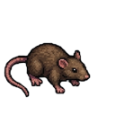
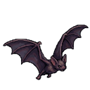
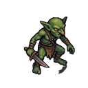
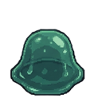
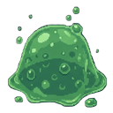
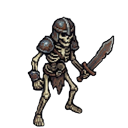
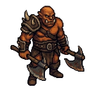
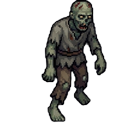
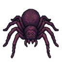
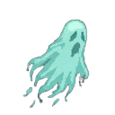
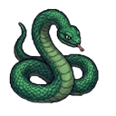
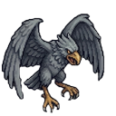
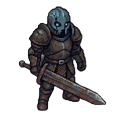
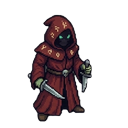
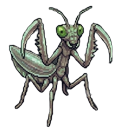
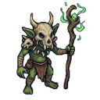
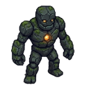
I Sei Boss
Ogni cinque piani, l'Abisso custodisce un Signore della tana. La sua arena è un'unica stanza isolata in fondo al labirinto: quando metti piede nella tana i cancelli si chiudono e il combattimento comincia. Non si scappa. Se vinci, il forziere leggendario della tana si apre: contiene solo equipaggiamento epico o leggendario.
| Piano | Boss | Salute | Firme della tana |
|---|---|---|---|
| 5 | 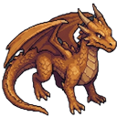 Drago Minore | 120 | L'unico che vola: soffio di fuoco a cono, palle di fuoco, picchiata dal cielo con telegrafo |
| 10 | 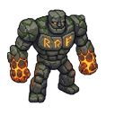 Golem di Pietra | 150 | Non vola: pestone con onda d'urto radiale e clava di roccia lanciata |
| 15 | 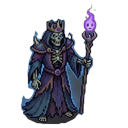 Lich Signore dei Nonmorti | 135 | Evoca servitori scheletrici, proiettili di energia arcana |
| 20 | 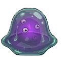 Regina delle Melme | 130 | Sputa melma acida, evoca melme, rigenera |
| 25 | 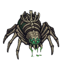 Re Ragno | 140 | Tela velenosa, morso che avvelena |
| 30 | 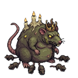 Re dei Ratti | 120 | Evoca orde di ratti, carica, ondata di ratti dal soffio |
Oltre il piano 30 la ruota gira di nuovo: il piano 35 ospita un altro Drago Minore, il 40 un altro Golem di Pietra, e così via — sempre più affamati.
L'Arte del Combattimento
L'attacco di base mira automaticamente al nemico più vicino dentro la tua gittata: tu ti occupi di posizione e ritmo. Ogni classe ha la propria animazione di fendente (spada, pugnali, bastone, arco, martello, bacchetta, mandolino, pugni, fucile al plasma).
- Critico: Ladro (28%), Monaco (20%) e Bardo (15%) possono infliggere colpi critici.
- Mana: Mago e Negromante consumano 2 di mana per attacco e più mana per l'abilità. Senza mana l'attacco a distanza si fa più debole: tieni pozioni di mana.
- Telegrafi: le mosse pericolose (soffio, carica, pestone, picchiata) vengono annunciate da anelli che si contraggono e bagliori colorati sul terreno.
- Aggro: ogni creatura ha un raggio d'attenzione. I nemici ignorati dopo un po' smettono di inseguirti.
- Schermo rosso: quando subisci un colpo lo schermo si tinge di rosso dal lato da cui arriva il danno: la direzione dell'attacco è scritta nel dolore.
Esplorazione
L'Abisso è avvolto dalla nebbia di guerra: vedi solo le zone che hai già esplorato. Le stanze sono illuminate da torce tremolanti — la luce non mente, il buio sì.
- Forzieri: tante casse di legno sparse per i piani. Avvicinati e premi E: oro, pozioni, potenziamenti o equipaggiamento a sorte.
- Scale: la via verso il basso, un gradino luminoso su una pedana. Premi E per scendere al piano successivo. Ogni piano viene rigenerato: nuovi labirinti, nuove prede, stessi pericoli.
- Minimappa: premendo M vedi le zone esplorate, le scale, i forzieri rimasti, il mercante e la posizione dei compagni.
- Frecce ai bordi: quando un compagno è fuori schermo, una freccia al bordo indica la sua direzione. Lo stesso vale per i boss: una freccia d'oro pulsante indica la tana finché il Signore della tana è vivo.
- Prima persona: con V passi alla visuale in prima persona (stile Doom): l'arma della tua classe appare in mano. Ottima per l'immersione, richiede il doppio dell'attenzione.
Equipaggiamento
Sotto l'Abisso si trovano cinque tipi di equipaggiamento. A differenza dei potenziamenti, restano permanenti finché non trovi qualcosa di meglio nello stesso slot. Si equipaggiano da soli camminandoci sopra.
| Slot | Oggetto | Cosa migliora |
|---|---|---|
 Elmo Elmo | 🪖 | Statistiche casuali tra: salute extra, % danno, % velocità, % danno subito in meno |
 Collana Collana | 📿 | |
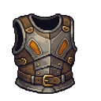 Armatura | 🛡️ | |
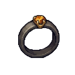 Anello | 💍 | |
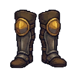 Gambali | 👢 |
Quattro rarità, più rara = più statistiche e più forti:
| Rarità | Statistiche | Potenza |
|---|---|---|
| Comune | 1 | ×1.0 |
| Raro | 1 | ×1.35 |
| Epico | 2 | ×1.6 |
| Leggendario | 3 | ×2.2 |
Più scendi in profondità, più le rarità alte diventano comuni. Il forziere dei boss rilascia solo pezzi epici o leggendari.
Potenziamenti
Benedizioni temporanee che si raccolgono da terra o si comprano dal mercante. Durano pochi secondi: il momento in cui le usi conta quanto il momento in cui le trovi.
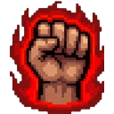
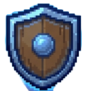
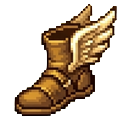
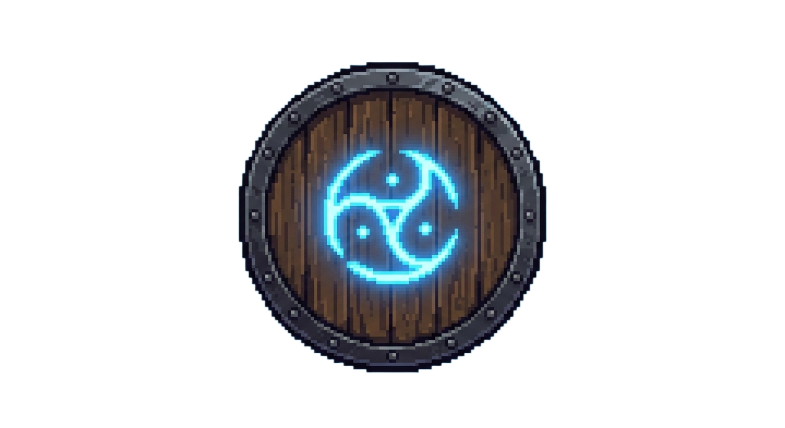
Il Mercante
Nel santuario della zona d'ingresso, il mercante 🏪 attende chi ha oro in tasca — e sa bene che non lo terrà a lungo. Avvicinati e premi E (o clicca sulla scritta) per aprire il banco. Si chiude con E o Esc.
| Merce | Prezzo |
|---|---|
| 🧪 Pozione di salute | 12 + 2 × piano |
| 🔮 Pozione di mana | 12 + 2 × piano |
| 💪 Potenziamento casuale | 20 + 4 × piano |
| 🎲 Equipaggiamento a sorte | 45 + 8 × piano |
I prezzi crescono con la profondità: l'oro è abbondante nei piani bassi, ma le cose belle costano care. L'equipaggiamento comprato è casuale: può essere un comune… o un leggendario.
La Morte è per Sempre
Quando la tua salute tocca lo zero non muori subito: cadi a terra. Per ventidue secondi giaci al suolo, in balia dell'oscurità — e dei compagni.
- Rianimazione: un compagno può salvarti premendo e tenendo E vicino al tuo corpo. Un alleato vale più di qualsiasi pozione.
- La fine: se nessuno ti rianima entro il tempo limite — o se vieni colpito di nuovo mentre sei a terra — è la fine.
- Permadeath: perdi tutto: oro, pozioni, potenziamenti ed equipaggiamento. Resta solo il record (il miglior oro e il piano raggiunto in questo mondo).
Compagnia nell'Ombra
L'Abisso è un mondo condiviso e persistente: stesso codice stanza, stesso mondo. Fino a 8 avventurieri (oltre il limite si entra da osservatori) si muovono nello stesso labirinto, si vedono, si aiutano — e si dividono il bottino delle tane.
- Chat: Invio apre la chat; i messaggi appaiono come bolle sopra i personaggi.
- Vocale: il pulsante 🎤 accanto a «Nel mondo» attiva il microfono: parla con i compagni.
- Host del mondo: il primo che crea la stanza ne è il custode; se se ne va, il custode passa a un altro. Se due mondi si dividono per un attimo (VPN, relay), il gioco li ricongiunge da solo scegliendo il mondo «vissuto».
- Copia link: nel pannello di aiuto c'è il pulsante «Copia link»: chiunque lo riceva entra nello stesso abisso.
- Frecce ai bordi e minimappa: non perdere mai di vista i compagni.
Segreti e Consigli
- Il santuario è casa tua: i mostri non entrano nella zona d'ingresso. Usala per riordinare, comprare e organizzare la discesa.
- Il record non mente: tienilo d'occhio; è la misura della tua discesa più profonda.
- I telegrafi dei boss: anello che si contrae = esplosione in arrivo. Uscire dalla zona prima dell'impatto è sempre possibile.
- Potenzia prima, affronta dopo: Furia e Concentrazione trasformano un combattimento equilibrato in una vittoria netta. Scudo e Fretta salvano la vita.
- Il forziere del boss: solo dopo la vittoria sulla tana. Epico o leggendario, garantito: vale ogni passo della discesa.
- La prima persona (V) non è solo estetica: nei corridoi stretti la precisione visiva aiuta a incassare meno colpi.
- Il suono avvisa: il gioco genera suoni ed effetti al volo. Attivati, il ruggito di un boss ti salva la vita prima ancora che lo vedi.
L'Abisso non finisce mai. I suoi piani scendono oltre il trentesimo, i suoi tesori non si esauriscono, e i suoi mostri si fanno ogni volta più affamati. Questo manuale finisce qui — ma la discesa, avventuriero, è appena cominciata.